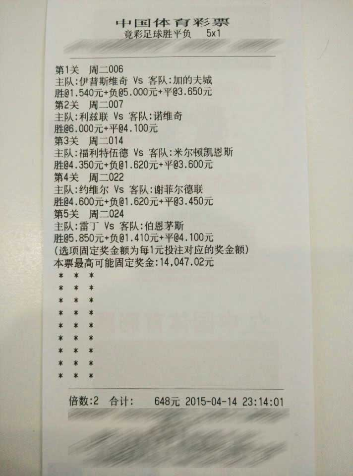

随着大V彩客户端的用户群越来越庞大，众多高手也逐渐开始崭露头角，几乎每天都有高回报神单出现。不过，最近一张未中奖的单子却引起了小编的注意。4月14日晚，大V彩某用户在英冠和英甲联赛中选择了五场比赛，购买了一张2倍额度、价值972元的单子。单倍超过600元的五串一，多数情况下是进行了比分、进球数等其他玩法的复选，但令小编没有想到的是，这居然是一张胜平负玩法的大单！
该用户供选择了周二006、周二007、周二014、周二022、周二024五场比赛，其中除周二007利兹联VS诺维奇的比赛之外，其余四场均将不让球胜平负三个选项全包投注，而针对周二007却做出了利兹联受让1球胜、和不让球胜、平的选择，看来这名用户是非常看好利兹联主场爆冷阻击冲超热门诺维奇。不过比赛的过程波澜不惊，最终利兹联主场0-2输掉了比赛，无论从场面还是赛果上，都没有出现冷门。小编计算了一下，这名用户选择的这五场比赛，有三场比赛打出了不让球最低奖金，赔率都在1.62以下，周二022约维尔VS谢菲尔德联打出了最高赔率4.60，即便利兹联主场爆冷击败诺维奇，打出6.00的高赔率，该用户这个单子的中奖总额也仅为550.16元，远远小于他的总投注额972元。而且在该玩家的投注记录中，出现过多次类似的任性投注方式，让人难以理解。
